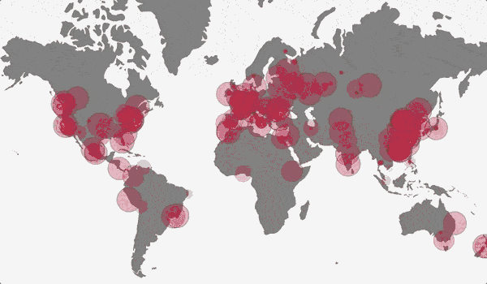
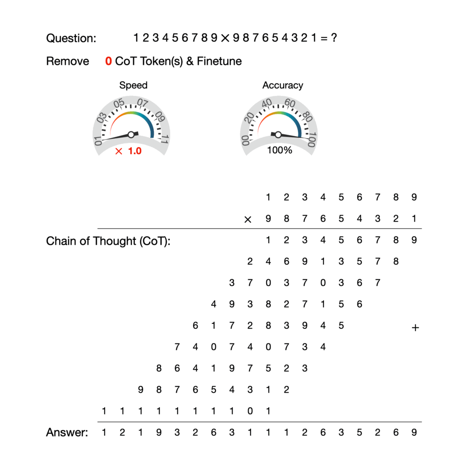
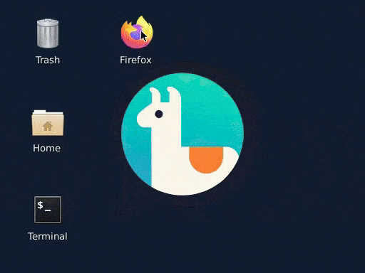
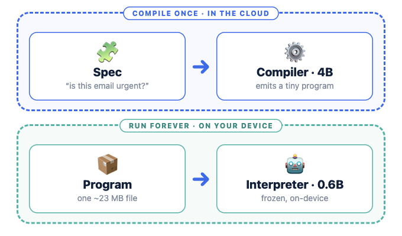

Real user–chatbot interactions were not public
public datasets
curated prompts
Clean tasks written by annotators or generated by models.
deployed systems
real conversations
Messy, multi-turn, multilingual, and mostly proprietary.
We wanted a public dataset that showed how people actually use ChatGPT.
Users explicitly opted in to data collection
Free ChatGPT accesspublic web service
→
Two-step consentcollection and publication
→
Privacy processingPII redaction and hashed IPs
The service did not require an account or personal information.
1.0M
conversations in the ICLR 2024 release
4.8M
conversations in the current public release
Zhao et al., “WildChat: 1M ChatGPT Interaction Logs in the Wild,” ICLR 2024 Spotlight.
Only 53% of turns are in English

68
languages
Top languages after English: Chinese and Russian.
Real prompts are often underspecified
Ambiguity, code-switching, and domain-specific context are common.
Different toxicity detectors find different cases
The two detectors agree on only 3.73% of user turns.
Turn-level analysis in the WildChat paper. Percentages are detector flags, not ground-truth labels.
WildChat became evaluation data
OpenAI o1
safety evaluation
Claude 3
refusal evaluation
WildBench
real-user benchmark
The dataset also supports research on privacy, misuse, multilinguality, and user behavior.
Million-scale chat logs need an interactive viewer
- Filter by language, country, toxicity, or text
- Search individual conversations
- Explore conversations in embedding space

Deng et al., “WildVis,” EMNLP 2024 Demo · wildvisualizer.com
Explicit chain of thought serializes every step
Longer reasoning means more generated tokens and more inference time.
Reasoning does not have to be expressed in human language
explicit CoT
12×3
→
6+30
→
36
reason across generated tokens
implicit CoT
12×3
→
layers
1 … L
1 … L
→
36
reason through hidden states
Deng et al., “Implicit Chain of Thought Reasoning via Knowledge Distillation,” 2023.
Implicit CoT solves 5×5 multiplication directly
Implicit CoT: 4.3 examples/s · Explicit CoT: 0.8 examples/s
Exact match; task-specific training on augmented multiplication data; batch size 1.
Reasoning can be internalized gradually
- Start with the full chain of thought
- Remove a small number of reasoning tokens
- Finetune and repeat

Deng, Choi, and Shieber, “From Explicit CoT to Implicit CoT,” 2024.
Hidden reasoning is harder to inspect
benefit
fewer output tokens
cost
less interpretability
Implicit CoT is a speed–transparency trade-off, not a universal replacement for explicit reasoning.
Every screen pixel is generated by a neural network

No real kernel · no installed applications · no fixed UI tree
Rivard et al., “NeuralOS,” ICLR 2026.
Predict the next frame after each user action
Current screenplus recent history
+
User actionmouse, click, or key
→
Next screengenerated frame
Feed the generated frame back into the model and repeat.
An RNN stores state; diffusion renders the screen

RNN
tracks long-term OS state
diffusion model
renders the next frame
Random exploration prevents action shortcuts
Agent datahover near close, then click
→
Wrong shortcut“hover means close”
→
Random datahover without clicking
2K
agent demonstrations
120K
random-exploration demonstrations
Doom was learned without being installed

generated desktop

double-click launches Doom

escape returns to desktop
Training videos were fabricated by adding an icon and splicing in gameplay.
Resolution increased fourfold in 18 months
2024 · 256×256
2025 · 512×384

2026 · 1024×768
NeuralOS can be a simulator for computer-use agents
Agent actionpotentially unsafe
→
NeuralOSlearned environment
→
Synthetic outcomeno real account or machine
A computer-use analogue of a driving simulator.
Some useful functions are easy to describe but hard to code
Rules and regular expressions are brittle; a full LLM call is often excessive.
Compile once; run locally
Natural-language spec“is this email urgent?”
→
Compile oncelarge model in the cloud
→
Run locallysmall frozen interpreter
After compilation: no API key, no internet, and no repeated large-model call.
One interpreter can run many programs

compiler
4B
used once per program
local runtime
0.6B + 23MB
shared interpreter plus one adapter
The result is called like a normal function
# Compile and load a local function.
fn = paw.compile_and_load(
"Classify if an email requires immediate attention"
)
# This call runs locally.
fn("Need your signature by EOD!") # → "immediate"
PAW on 0.6B reaches 73.8% on FuzzyBench
About 50× less model memory than the 32B baseline
FuzzyBench verified test set; exact match.
One product can use many small programs
30
compiled programs in the site helper
28
serve live in routing, retrieval, answering, and validation
AI systems that can be customized to particular users and use cases
General models are useful; many applications also need behavior tailored to their data, constraints, and deployment setting.